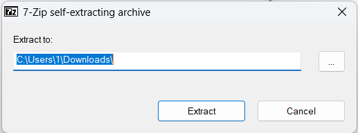

Windows 校园 SMB 共享服务使用指南
?重要提示：如需添加游戏等资源，请联系管理员处理！
一、核心信息（必看）
- 服务器地址：
\\10.88.202.78（复制即用，勿漏反斜杠）
- 登录凭据：
- 适用网络：支持「校园网络」
（校外也可以连接）（只是只有50mbps的速度。。。你懂的）
二、两种连接方法（任选其一）
方法一：直接通过文件资源管理器访问（推荐）
打开浏览器，并登录Alist
学生目录
2. 成功后直接进入共享文件夹，可查看/使用内部文件。
3、若没有密码，请点击
以访客登录，点击临时文件夹，里面有一个文件叫“游戏.exe”。下载并点击，会弹出一个选择界面。如图

最后再点击里面的“游戏”。用户名及密码请参照核心信息
PS：你想拥有专属的账户嘛？欢迎联系我们
方法二：映射网络驱动器
- 打开「文件资源管理器」，右键点击左侧「此电脑」；
- 选择「映射网络驱动器」；
- 在「文件夹」输入框中，粘贴地址：
\\10.88.202.78\游戏
- 勾选「使用其他凭据连接」，点击「完成」；
- 弹出认证窗口，输入用户名「user」、密码「暂无」，勾选「记住我的凭据」，点击「确定」；
- 成功后，「此电脑」会新增「网络驱动器图标」，下次直接双击即可打开，无需重复连接。
三、常见问题解决（连接失败看这里）
- ? 无法连接服务器？
检查：是否已连接「校园网络」（切换至校园WiFi/网线）；
- ? 地址报错？
核对：服务器地址是否为 \\10.88.202.78（勿少输反斜杠、勿输错数字）；
- ? 登录失败？
确认：用户名是「user」，密码为「暂无」（若无法登录，联系管理员确认）；
- ? 仍无法连接？
尝试：退出文件资源管理器后重新操作，或重新输入凭据。
四、注意事项
- 仅在校内网络可用，校外（如家庭网络、手机热点）无法访问；
- 勾选「记住我的凭据」后，同一台电脑下次无需重复输入账号密码；
- 请勿修改/删除共享文件夹内的系统文件，避免影响所有用户使用。
#若想添加游戏，请将游戏名称写在纸上并放到高一二班10226柜子